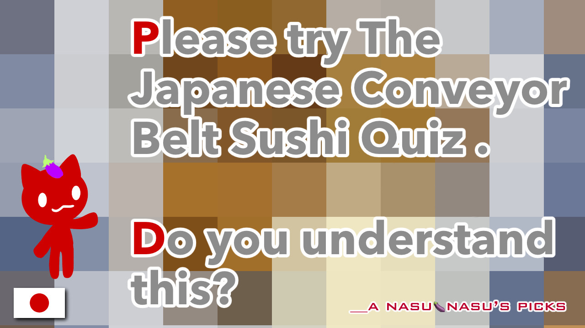

The Conveyor Belt Sushi Quiz 1

A story about a conveyor-belt sushi restaurant that brought back memories of a familiar taste.
This is something that surprised me recently.🫢
Please do try taking part in the quiz.💡
It really makes me feel like the world has changed.🌏
I made it a bit of a joke.🤡
I’m curious about how fast conveyor-belt sushi moves in other parts of the world, but here, it’s just incredibly fast!
💦
This is a bit of a departure from Japanese food, but I really love this particular dish. 🍽️
The specialty shop I like that sells it is just so far away. 😵
It’s also a hassle to make it myself. 😵
Due to certain circumstances, I haven’t been able to visit that shop much, but it’s a small place run by a Japanese person.
While the authentic version is delicious, the people at that little shop are so friendly, and the food tastes great.😋
It’s a tough time for small businesses to stay afloat, so I really hope it stays open.💦
I’d love to go back.💭